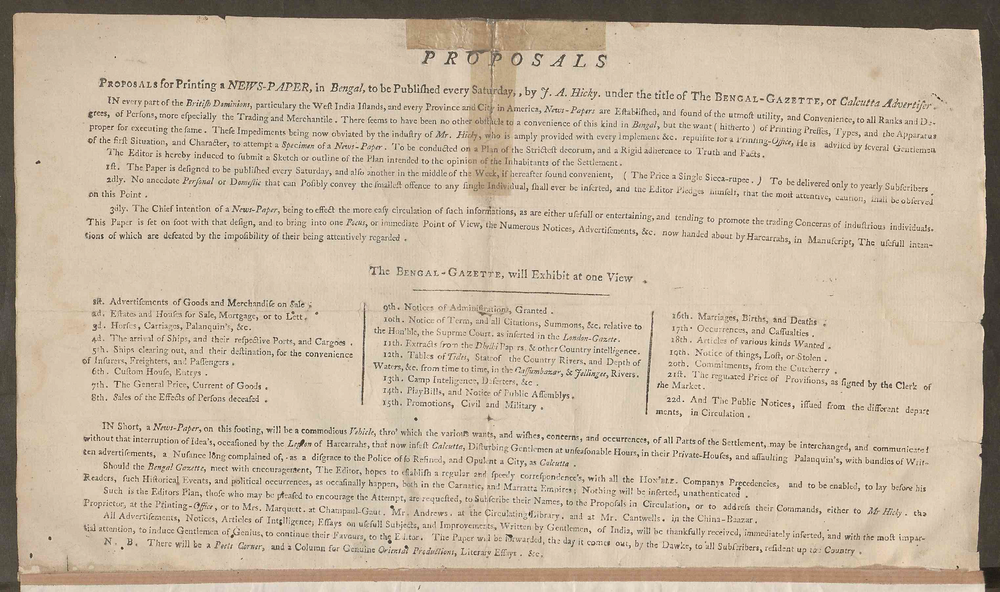
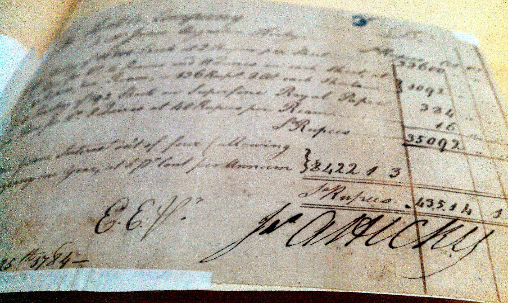
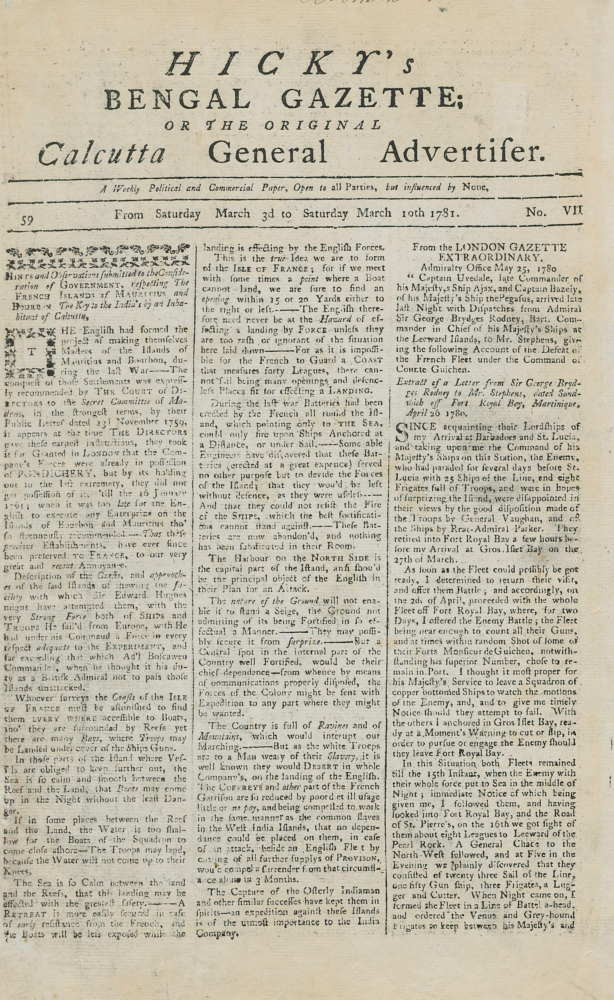
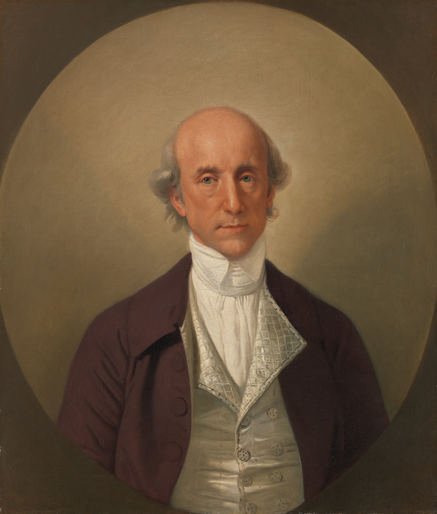
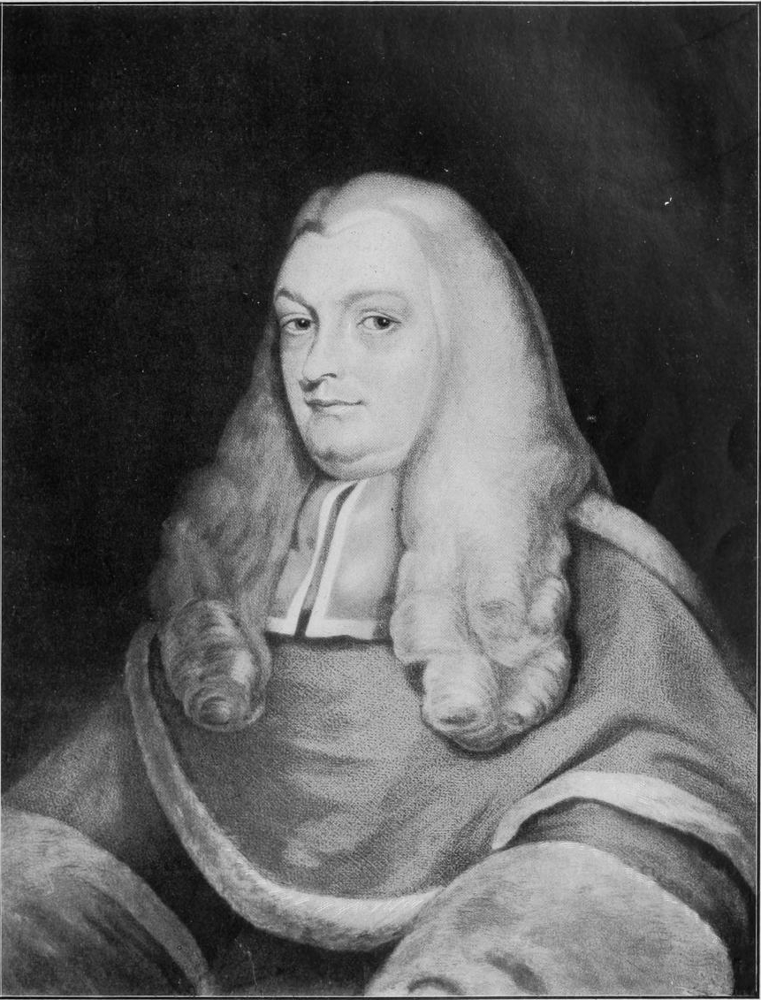

An Irishman With a Press

Hicky's surviving prospectus, laying out his plan for a weekly paper at one sicca rupee an issue and promising that no anecdote personal or domestic that can possibly convey the smallest offence to any single individual shall ever be inserted, a pledge his later issues would abandon almost entirely.
James Augustus Hicky was, by most contemporary accounts, an unlikely candidate to found the first newspaper in Asia. Irish born, he had trained as a surgeon before turning to printing, and had spent time in a Calcutta debtor's prison after his business affairs collapsed. It was during that imprisonment, according to the memoirist William Hickey, no relation, who had helped secure his release as an attorney, that Hicky first encountered a treatise on printing and began teaching himself the trade, reasoning that no press had ever operated in Calcutta and that a market for one might exist. It is a origin story that reads almost too neatly, a jailed debtor discovering his life's calling in a technical manual, but it is corroborated closely enough across the surviving accounts to be broadly accepted by historians of the period.
The idea of an Indian newspaper was not, strictly speaking, original to Hicky. A Dutch adventurer named William Bolts had floated the concept as early as the late 1760s, more than a decade before Hicky's paper actually appeared, but nothing had come of it. What Hicky had that Bolts apparently lacked was the practical printing knowledge, the capital, however modest, to acquire type and construct a press, and the sheer persistence to see the project through. Once his equipment arrived, likely assembled with skills and connections built during earlier years in London, Hicky issued a prospectus announcing his intentions, then set to work on Bengal's, and Asia's, first newspaper.

A surviving bill, signed by Hicky, for printing work done for the East India Company. Before it became a vehicle for attacking the Company's officials, Hicky's press earned its keep doing ordinary commercial and administrative jobs like this one.
It is worth placing this moment against everything the previous two chapters established. Calcutta by 1780 had the paperwork-hungry Company bureaucracy, the trade network humming along the Hooghly, and the sea link back to London that could, in principle, supply printing equipment. What it had not yet had, until Hicky, was someone willing to put those pieces together for the specific purpose of a public newspaper rather than administrative or commercial printing alone. Hicky was, in that narrow sense, less an inventor of new technology than the first person in Bengal to notice what the existing infrastructure could be used for if pointed at general readership rather than government paperwork.
William Hickey's memoir, one of the few detailed contemporary accounts of Hicky's early career, describes him as a man of low wit and a happy knack at applying appropriate nicknames and relating satirical anecdotes, talents that would define his newspaper's voice as much as any political conviction. It is a useful reminder that Hicky's later reputation as an early press freedom martyr, which this chapter will complicate rather than simply endorse, sits alongside a more ordinary, less flattering picture: a struggling debtor with a gift for mockery, who found in printing both a livelihood and an outlet for grievances that were often intensely personal as well as political. The two readings are not actually in tension. A publisher does not need pure motives to end up defending an important principle, and Hicky's mixture of genuine grievance, financial desperation, and simple relish for a fight produced, almost as a byproduct, one of the earliest sustained arguments for press independence anywhere in colonial Asia.
The First Issue

Issue No. VII, covering 3 to 10 March 1781, one of the relatively small number of Hicky's Bengal Gazette issues known to survive today, held in the collection of the University of Heidelberg. This particular issue predates Hicky's imprisonment; its front page carries shipping and war news rather than one of his attacks on Hastings, Impey, or Kiernander.
Hicky's Bengal Gazette, or the Original Calcutta General Advertiser, appeared for the first time on Saturday, 29 January 1780, and continued as a weekly Saturday paper from its offices at 67 Radha Bazar. It sold for one rupee an issue, and its circulation, while modest by later standards, was estimated at around four hundred copies a week, a genuinely significant readership given the size of Calcutta's English-literate population at the time. Two full pages, sometimes stretching to four, carried a mixture of shipping notices, local advertisements, general interest items, gossip, and, increasingly as the paper found its feet, political commentary.
Hicky's early issues were, by his own later account and that of contemporaries, relatively cautious. He had not set out, initially, to build a paper defined by confrontation with the colonial government. What changed his approach was less a change of heart than a change of circumstance: Hicky came to believe that officials connected to the East India Company, including an employee named Simeon Droz, were preparing to launch a rival paper as retaliation for his refusal to pay a bribe, a rival that would become the India Gazette. Once Hicky concluded that Calcutta's establishment was moving against him rather than merely ignoring him, his editorial stance shifted decisively from neutral observer to independent, and increasingly adversarial, critic.
The paper's own stated motto captured this shift succinctly: open to all parties, but influenced by none. It was an assertion of editorial independence almost unheard of in an eighteenth century colonial press, most of which existed either as a government mouthpiece or a commercial advertising sheet with no interest in provoking the authorities that made its operation possible. Hicky, whether by temperament, grievance, or genuine conviction, had no such interest in staying quiet.
It also matters that Hicky was operating almost entirely without institutional protection. He was not backed by a wealthy patron, a religious mission, or a faction within the Company hierarchy, the kinds of backing that, as later chapters show, cushioned many of Bengal's subsequent newspapers when they ran into official displeasure. His press was a small, self-financed operation, run out of rented premises on the strength of subscription income and advertising revenue alone. That vulnerability shaped his editorial choices as much as his temperament did. A better-capitalized editor with institutional backers to protect might have moderated his tone once the risks became apparent. Hicky, with comparatively little to lose beyond the paper itself, had less reason for restraint, and his later willingness to keep printing from jail suggests a publisher for whom the newspaper had become close to the only asset, reputational or financial, he still possessed.
From Neutral to Notorious

Warren Hastings, painted around 1783 to 1784, not long after the events this section describes. He was the most powerful of Hicky's targets, and the official who ultimately sued him for libel.
Over the months that followed, Hicky's paper became a running catalogue of accusations against the most powerful figures in Company Bengal. He accused Governor-General Warren Hastings of corruption, of accepting bribes on behalf of the administration, and of prosecuting wars of expansion that served the Company's ambitions rather than any legitimate defensive need. He accused Elijah Impey, the Chief Justice of the Supreme Court at Fort William, of taking bribes, a charge aimed squarely at the same judicial institution that would, within a year, be trying Hicky himself. He accused Johann Zacharias Kiernander, the leader of Calcutta's Protestant mission, of misappropriating funds meant for orphaned children, a particularly damaging charge against a figure who had built his public reputation on charitable and religious authority.
What made these accusations dangerous, rather than merely embarrassing, was less their content than their delivery. Hicky wrote in a sarcastic, provocative, occasionally crude style that made his attacks memorable and widely repeated, applying nicknames and satirical anecdotes to his targets in a way that stuck. His paper also ventured into territory that was, for its time, genuinely taboo, touching on topics of sexuality and arguing, in terms that anticipate later class-conscious journalism by more than a century, against taxation imposed on the poor without any corresponding voice in how that revenue was spent. None of this made Hicky a systematic political theorist. It made him something arguably more dangerous to a colonial administration used to operating without public scrutiny: a genuinely popular and widely read source of ridicule, at a moment when the administration had no established legal or institutional mechanism for controlling what a newspaper could print.
That last point deserves emphasis, because it explains why Hicky's confrontation with the government took the specific legal shape it eventually did, rather than a simple administrative shutdown. In January 1780, no licensing law, no registration requirement, and no formal press regulation existed in Bengal. Wellesley's Censorship Act, covered in a later chapter, was still nearly two decades away. Hastings and his allies, confronted with a paper they had no direct regulatory power to silence, were forced to improvise, first through administrative harassment, and eventually through the courts.
Hicky Versus Calcutta: A Map of the Accusations
Four men, four separate charges, all printed in the same paper within its first year. Click a name.
Hicky's paper accused four of Calcutta's most powerful figures of specific wrongdoing, within months of its first issue. Click any name on the diagram.
A Rival Paper and a Postal Ban
The administration's first real countermeasure was not a lawsuit but a logistics problem. After Hicky publicly accused Simeon Droz of orchestrating a rival paper as retaliation, Hastings' Supreme Council responded by banning Hicky's Bengal Gazette from being carried through the post office, a serious blow to a weekly paper that depended on postal distribution to reach readers beyond central Calcutta. Hicky treated the ban as confirmation of exactly the kind of unaccountable official overreach he had been accusing the administration of all along, and used his own pages to argue that the postal ban itself amounted to a violation of his right to free expression, an argument that, whatever its ultimate legal merit under eighteenth century colonial law, put the underlying question of press freedom explicitly on the record for the first time in the region's history.
The rival paper duly arrived. The India Gazette published its first issue on 18 November 1780, backed by interests sympathetic to the Company establishment and positioned, implicitly, as a more restrained and reliable alternative to Hicky's increasingly combative sheet. Hicky responded that same day with a small but pointed act of branding: he changed his own paper's subtitle from Hicky's Bengal Gazette, or Calcutta General Advertiser to Hicky's Bengal Gazette, or the Original Calcutta General Advertiser, inserting the word Original specifically to remind readers which paper had actually come first.
The Masthead, Before and After 18 November 1780
A single word, added to a subtitle, as a direct response to a rival paper's launch.
Hicky's Bengal Gazette, or Calcutta General Advertiser
The paper's original subtitle, in place from its first issue on 29 January 1780, with no rival paper yet in existence to compete against.
Hicky's Bengal Gazette, or the Original Calcutta General Advertiser
Changed the same day the India Gazette launched. The single inserted word, Original, was a direct, public claim to priority over the new rival.
The following chapter in this history covers the India Gazette and the Calcutta Gazette in more depth, as the first of a wave of officially aligned or semi-official papers that emerged partly in direct response to Hicky's example. It is worth noting here, though, that the very existence of a rival paper, launched with what Hicky and later historians have both read as at least implicit official encouragement, demonstrates that Calcutta's administration recognized the press as a force worth countering with more of the same medium, not just legal suppression. Journalism, in other words, had become important enough in Calcutta within less than a year of Hicky's first issue that the colonial establishment's first instinct was to compete with it rather than simply ban it outright.
Libel, Jail, and Continued Defiance

Sir Elijah Impey (1732 to 1809), the first Chief Justice of the Supreme Court of Judicature at Fort William. He presided over Hicky's four libel trials in June 1781, the same court whose bribery he had separately been accused of taking in Hicky's own paper.
The postal ban and the rival newspaper did not stop Hicky's attacks, and by mid-1781 the administration's response escalated from administrative pressure to formal legal action. In June 1781, Warren Hastings sued Hicky for libel. Over the course of four dramatic trials that month, the Supreme Court, presided over by the same Elijah Impey whom Hicky had separately accused of taking bribes, found Hicky guilty and sentenced him to imprisonment. It is difficult to overstate how directly this entangled the machinery of colonial justice with the very disputes Hicky's paper had been reporting on: the judge trying a newspaper editor for libeling the Governor-General was himself a figure the same editor had publicly accused of corruption.
Hicky's response to his own imprisonment was, in its way, the most striking part of the entire episode. Rather than ceasing publication, he continued to print Hicky's Bengal Gazette from inside his jail cell for roughly nine more months, maintaining his accusations against Hastings and others even as the legal net around him tightened. It is worth pausing on what this actually required in practical terms: coordinating type-setting, printing, and distribution of a weekly newspaper without the freedom to personally oversee the press, relying on whatever combination of associates, jailers' tolerance, and sheer stubbornness allowed the operation to continue. Whatever else can be said about Hicky's judgment or motives, this period represents one of the earliest and most literal demonstrations in South Asian history that a determined publisher could keep a paper alive even after the state had taken away his physical liberty.
That determination ultimately proved insufficient. When Hicky refused to moderate his coverage even from jail, Hastings pursued fresh legal action against him, closing off whatever narrow space had allowed the imprisoned Hicky to keep publishing. The stage was set for the final act of the paper's two year existence.
The trials themselves are also worth understanding as a preview of a pattern that would recur across the following two centuries of this history, covered in detail in the site's dedicated chapters on press law. A government confronted with a newspaper it found troublesome, but lacking any purpose-built statute for controlling the press, reached instead for the ordinary tools of civil and criminal law, defamation, libel, seditious language, breach of the peace, and stretched them to cover what was, in substance, a political dispute about the limits of acceptable criticism of those in power. This approach had a built-in advantage for the authorities: it did not require passing any new law, drafting any regulation, or publicly admitting that the government considered press criticism dangerous enough to warrant special legislation. It simply required a compliant or sympathetic court, which, given that Hicky's own trial judge was among the officials he had accused of corruption, Hastings' side had little difficulty securing.
Hicky's Bengal Gazette: The Legal Battle, Step by Step
Click through the five stages that took Hicky's paper from a postal ban to the seizure of its press, in order.
Click step 1 to follow the legal machinery that ended Hicky's Bengal Gazette, from an administrative postal ban through to the final seizure of its press.
Reading the Gazette
The panel below presents four illustrative reconstructions in the style and spirit of Hicky's Bengal Gazette, based closely on the documented content, targets, and tone described by historians and by contemporaries such as William Hickey. They are not verbatim transcriptions of surviving issues; one genuine facsimile page, shown earlier in this chapter alongside the paper's first issue, is the only complete original page reproduced on this site, but most individual issues have not survived or are not readily accessible, so the four excerpts below are built directly from the specific accusations, phrases, and editorial habits that the historical record attributes to Hicky's paper, rather than transcribed word for word from an original. Each excerpt carries a modern caption explaining its context and significance. Select an excerpt from the list to read it.
Hicky's Bengal Gazette: Selected Excerpts
Illustrative, based on documented content and tone. Select an entry to read it alongside its context.
The Seizure of 1782
Hicky's Bengal Gazette ceased publication on 30 March 1782, when the Supreme Court ordered the seizure of its type and printing press. The following week, that seized equipment, the very type that had printed two years of accusations against Hastings, Impey, and Kiernander, was publicly auctioned off, and, in a detail that later historians have treated as almost too fitting to be true, was purchased by the India Gazette, the rival paper whose 1780 launch had marked the first sign that Calcutta's establishment intended to answer Hicky's journalism with journalism of its own. The paper that had positioned itself, from its very subtitle onward, as the alternative to Hicky's provocations ended its rival's existence by literally absorbing its printing equipment.
The legal mechanics of Hicky's downfall are worth being precise about, because they establish a pattern that recurs throughout the press law history covered across this site. Hicky was not shut down by any dedicated press law or licensing regulation, none yet existed in Bengal in 1782. He was shut down through the ordinary machinery of civil litigation, libel suits pursued by the very officials his paper had criticized, tried in a court presided over by a judge he had also criticized, resulting eventually in a seizure order that accomplished through property law what no press-specific statute could yet accomplish directly. It would take until 1799, and Lord Wellesley's Censorship Act, covered later in this history, for Bengal's colonial government to develop a purpose-built legal tool for controlling the press. Hicky's suppression happened seventeen years earlier, improvised entirely from existing civil and criminal law.
What Hicky Left Behind
Hicky's Bengal Gazette lasted just over two years, from January 1780 to March 1782, and by any narrow commercial measure it was a failure: its founder ruined, his equipment seized and sold to the rival he had provoked into existence, his paper unable to outlast a single term of the Governor-General it had spent two years attacking. William Hickey, the memoirist who had helped free him from debtor's prison in the first place, later wrote that Hicky's own recklessness, letting his paper become a channel for what Hickey called scurrilous abuse against people of every rank, brought about his utter ruin. It is not an unfair assessment, on strictly personal terms.
Judged by a longer historical standard, though, Hicky's paper accomplished something that outlasted its own two year run by more than two centuries. It was, unambiguously, the first newspaper printed anywhere in Asia, establishing in practical terms that the infrastructure described in the previous two chapters, Calcutta's administrative concentration, its trade network, its sea link to London, could support not just official gazettes and commercial advertisers but an independent, argumentative, and popular press willing to criticize the very government whose administrative needs had made the press possible in the first place. Every subsequent chapter in Part I of this history, the India Gazette and Calcutta Gazette's rise as an officially aligned counterweight, the missionary presses at Serampore, Lord Wellesley's eventual censorship law, exists in some sense as a direct or indirect response to the precedent Hicky set: that a Bengal newspaper could function as a genuinely independent, adversarial institution, and that a colonial administration confronted with that fact would have to decide, again and again over the following century and a half, how far it was willing to let that independence go.
It is worth ending on the detail that Hicky himself likely would have appreciated: his printing press did not disappear when his paper did. It kept operating, under new ownership, printing the India Gazette for years afterward, carrying forward the physical infrastructure of Bengal's first newspaper war into the paper that had, in the end, outlasted it. The next chapter follows that surviving thread, tracing how the India Gazette, the Calcutta Gazette, and the wider ecosystem of officially aligned Calcutta newspapers built a very different, far more cautious model of colonial journalism directly in the shadow of Hicky's example.
What became of Hicky himself after 1782 is less well documented than the newspaper's rise and fall, a gap that is itself telling: the man who had spent two years ensuring that Calcutta's officials could not act without public scrutiny left behind a far thinner paper trail once his own press had been silenced. He is generally understood to have remained in India in reduced circumstances for some years afterward, his health and finances both damaged by his conflict with Hastings. That obscurity stands in sharp contrast to the enduring fame of the newspaper he founded, which is remembered today as a landmark not because Hicky himself achieved lasting personal success, but because the specific confrontation his paper provoked, an independent press versus an unaccountable colonial executive, turned out to be a preview of arguments that would recur, in one form or another, across every subsequent chapter of this history, through the Vernacular Press Act of 1878, the Special Powers Act of 1974, and the Digital Security Act of 2018, each covered later in this account.